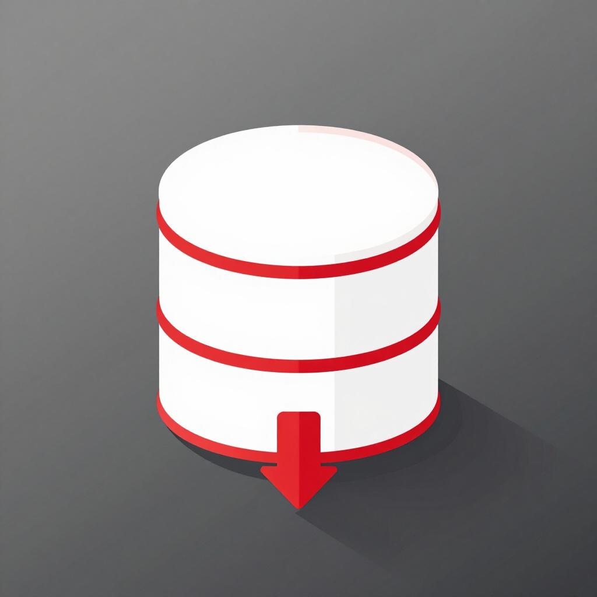

Technology
Students will be able to perform effectively in the library and information science professions by demonstrating competency in the application of technology. By the conclusion of the master’s degree program, students should be able to:
-
demonstrate effective use of current technologies
-
explain the impact and potential of current and emerging information technologies for management and delivery of services
-
organize and provide digital resources and services
-
evaluate and select appropriate technology for specific information services or applications
-
analyze issues, concepts, and challenges related to the impact of technology on information ethics and policy
Assignment

Click on the icon to the left to download the assignment.
Description
For this assignment, my group created a Microsoft Access database for a fictional property management company, LuxeLand Property Management. The company’s records were imagined as being paper-based, so the purpose of the project was to design a database that could help the company organize and manage its day-to-day information more efficiently. We had to think through what kinds of information a property management company would need to store, how those pieces of information related to each other, and how staff members might need to enter, search, update, and report on that information.
Analysis
By working in Microsoft Access to develop a functional database, my group's completion of this assignment demonstrated practical use of current technology. By building a database designed to move a company from paper to electronic record-keeping, we have shown that we understand how information technologies can make everyday operations more organized, efficient, searchable, and sustainable. In addition, the assignment required us to organize digital information and make it available through usable services by creating structured tables, queries, forms, reports, and navigation tools that would allow users to enter, find, update, and interpret information. We matched technology tools to specific information needs by deciding which Access features best supported the company’s goals, for example by using relational tables for organizing data and by using queries for retrieving and analyzing information.
Reflection
Building this Access database required both technical precision and a lot of collaboration. The technical work required us to paying attention to many small details at once: tables, relationships, queries, forms, reports, validation rules, formatting, and whether each part actually worked the way it was supposed to. Since I already had a great deal of experience working in Access and similar database systems such as Microsoft SharePoint, the most challenging part of the project ended up being working in a group. Group projects always require communication and compromise, but this one was especially difficult because the finished product depended on everyone meeting the same technical and design standards. Some group members produced work that was not initially up to the standards set by the rubric, so they had to be intensely coached in order to complete their parts of the assignment. That added another layer of labor, because I was not only responsible for my own work but also had to help make sure the overall project was consistent, functional, and complete. It was a great lesson in the real-world compromises and negotiations that go into library-related work projects.